Popular
The ones people ask about most.
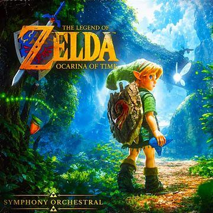
Zelda Ocarina of Time - Symphony31 tracks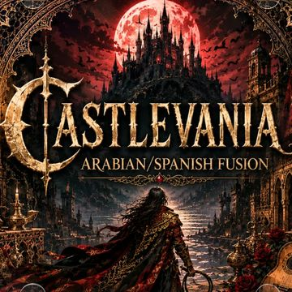
Castlevania - Arabian Remix Collection29 tracks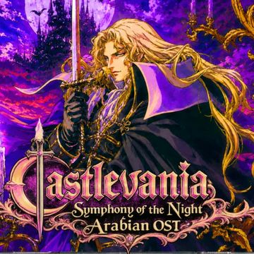
Castlevania: Symphony of the Night – Arabian Remix Collection28 tracks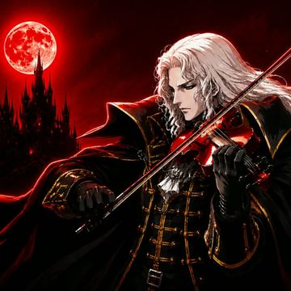
Castlevania: Symphony of the Night – Orchestral28 tracks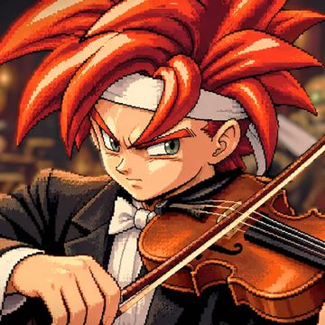
Chrono Trigger Symphony36 tracks Final Fantasy VI - Arabian Remix44 tracks
Final Fantasy VI - Arabian Remix44 tracks Mega Arabian X16 tracks
Mega Arabian X16 tracks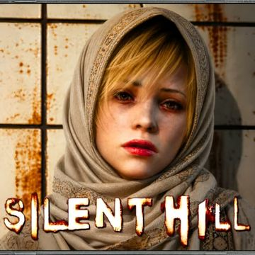
Silent Hill - Arabian Remix Collection10 tracks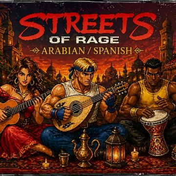
Streets of Rage - Arabian Spanish Fusion14 tracksBundles
Full collections in one bundle.
 Mega Arabian 1-9 CollectionBundle of 8 albums
Mega Arabian 1-9 CollectionBundle of 8 albums Mega Arabian X1-X8 CollectionBundle of 7 albums
Mega Arabian X1-X8 CollectionBundle of 7 albums Streets of Rage 1, 2 & 3 - The Complete Arabian Spanish Fusion TrilogyBundle of 3 albums
Streets of Rage 1, 2 & 3 - The Complete Arabian Spanish Fusion TrilogyBundle of 3 albums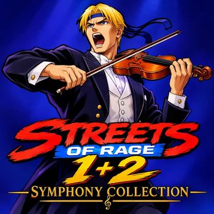
Streets of Rage 1+2 Symphony CollectionBundle of 2 albums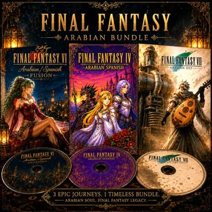
Final Fantasy IV, VI & VII - The Complete Arabian Spanish Fusion TrilogyBundle of 3 albumsSymphony
Orchestral arrangements.
 Zelda Majora's Mask - Symphony18 tracksZelda Ocarina of Time - Symphony31 tracks
Zelda Majora's Mask - Symphony18 tracksZelda Ocarina of Time - Symphony31 tracks Zelda Twilight Princess - Symphony28 tracks
Zelda Twilight Princess - Symphony28 tracks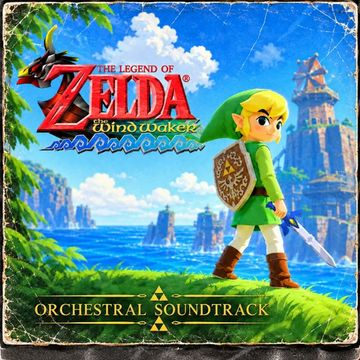
Zelda Wind Waker - Symphony12 tracks Mega X - Symphony25 tracksCastlevania: Symphony of the Night – Arabian Remix Collection28 tracksCastlevania: Symphony of the Night – Orchestral28 tracks
Mega X - Symphony25 tracksCastlevania: Symphony of the Night – Arabian Remix Collection28 tracksCastlevania: Symphony of the Night – Orchestral28 tracks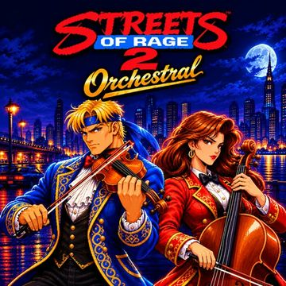
Streets of Rage 2 - Symphony20 tracks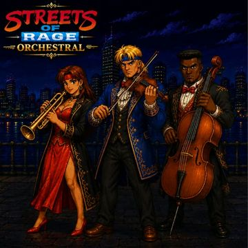
Streets of Rage - Symphony14 tracksChrono Trigger Symphony36 tracks Final Fantasy VI - Symphony48 tracks
Final Fantasy VI - Symphony48 tracks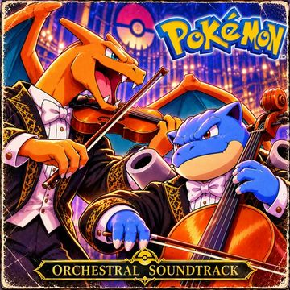
Pokemon Red Blue - Symphony31 tracks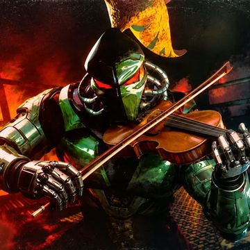
Killer Instinct - Symphony13 tracks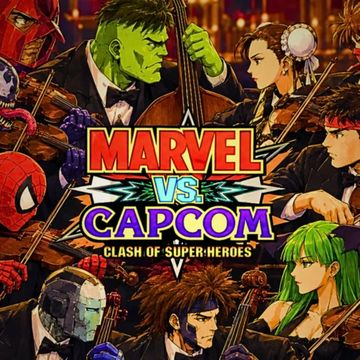
Marvel vs Capcom - Symphony21 tracks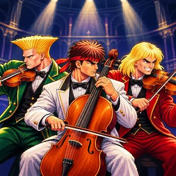
Street Symphony II20 tracks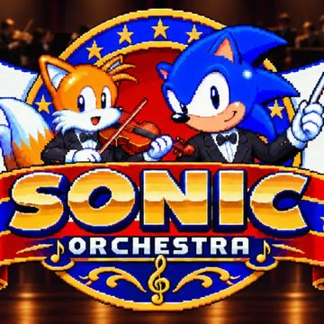
Sonic 1,2 - Symphony22 tracks Sonic 3 and Knuckles - Symphony24 tracks
Sonic 3 and Knuckles - Symphony24 tracks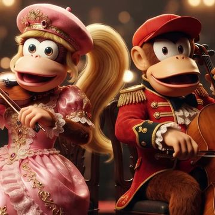
Donkey Kong Country 2 - Symphony21 tracksDonkey Kong Country - Symphony17 tracks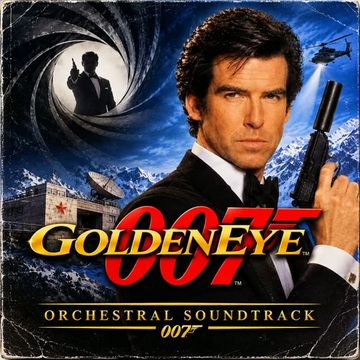
GoldenEye 007 - Symphony13 tracksRE Symphony16 tracksArabian
Arabian and Spanish fusion remixes.
 The Legend of Zelda: A Link to the Past Arabian Spanish Fusion22 tracks
The Legend of Zelda: A Link to the Past Arabian Spanish Fusion22 tracks Zelda Majora's Mask Arabian/Spanish28 tracks
Zelda Majora's Mask Arabian/Spanish28 tracks Zelda Ocarina of time Arabian Spanish40 tracks
Zelda Ocarina of time Arabian Spanish40 tracks Zelda Wind Waker Arabian11 tracks
Zelda Wind Waker Arabian11 tracks Mega Arabian 1, 217 tracks
Mega Arabian 1, 217 tracks Mega Arabian 317 tracks
Mega Arabian 317 tracks Mega Arabian 419 tracks
Mega Arabian 419 tracks Mega Arabian 517 tracks
Mega Arabian 517 tracks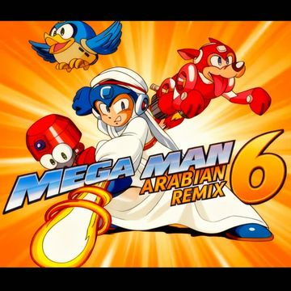
Mega Arabian 616 tracks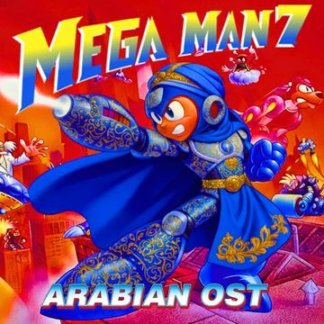
Mega Arabian 726 tracks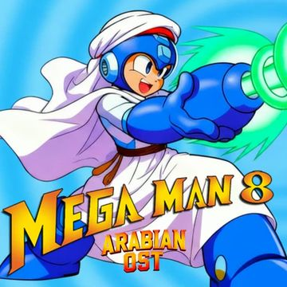
Mega Arabian 827 tracks Mega Arabian 920 tracksMega Arabian X16 tracks
Mega Arabian 920 tracksMega Arabian X16 tracks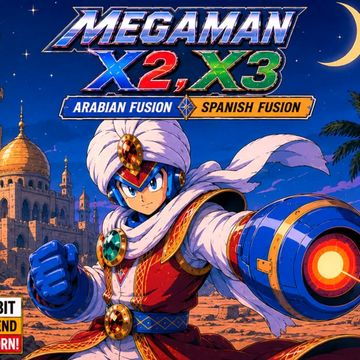
Mega Arabian X2 + X326 tracks Mega Arabian X420 tracks
Mega Arabian X420 tracks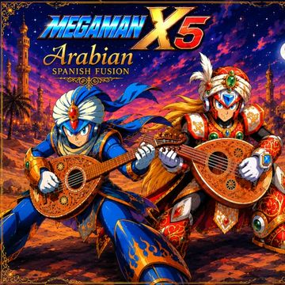
Mega Arabian X529 tracks Mega Arabian X624 tracks
Mega Arabian X624 tracks Mega Arabian X731 tracks
Mega Arabian X731 tracks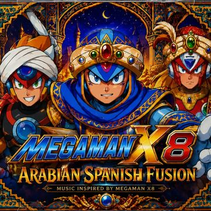
Mega Arabian X831 tracksCastlevania - Arabian Remix Collection29 tracks Streets of Rage 2 - Arabian Spanish Fusion18 tracks
Streets of Rage 2 - Arabian Spanish Fusion18 tracks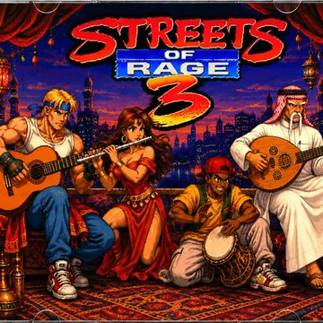
Streets of Rage 3 - Arabian Spanish Fusion17 tracks Streets of Rage 4 - Arabian Remix33 tracksStreets of Rage - Arabian Spanish Fusion14 tracks
Streets of Rage 4 - Arabian Remix33 tracksStreets of Rage - Arabian Spanish Fusion14 tracks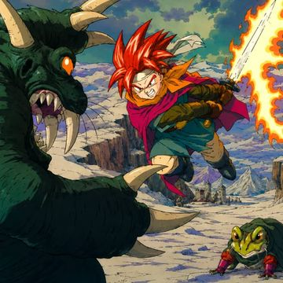
Chrono Trigger Arabian Spanish Fusion49 tracks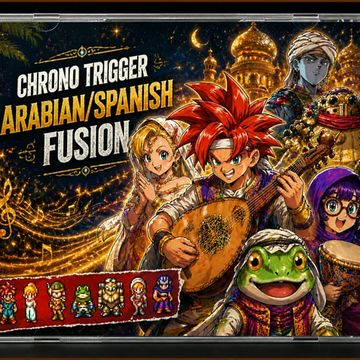
Chrono Trigger OST - Arabian/Spanish Fusion43 tracks Final Fantasy IV - Arabian Spanish34 tracksFinal Fantasy VI - Arabian Remix44 tracks
Final Fantasy IV - Arabian Spanish34 tracksFinal Fantasy VI - Arabian Remix44 tracks Final Fantasy VII - Arabian Remix82 tracks
Final Fantasy VII - Arabian Remix82 tracks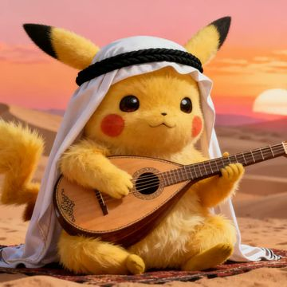
Pokemon Red/Blue Middle Eastern Remix32 tracks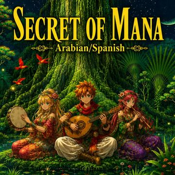
Secret of Mana - Arabian Spanish28 tracks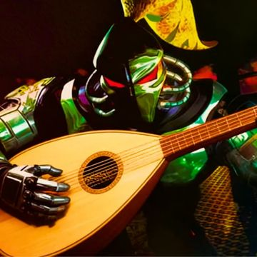
Killer Instinct Middle Eastern Remix14 tracks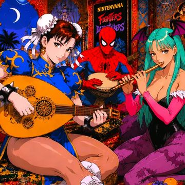
Marvel Vs Capcom - Arabian Spanish26 tracks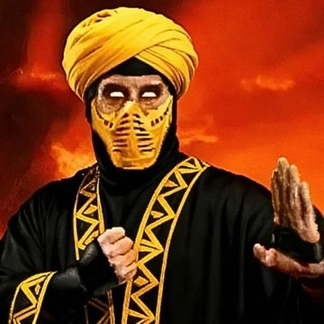
Mortal Kebab II10 tracks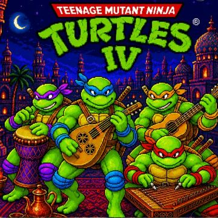
Ninja Turtles IV - Arabian13 tracks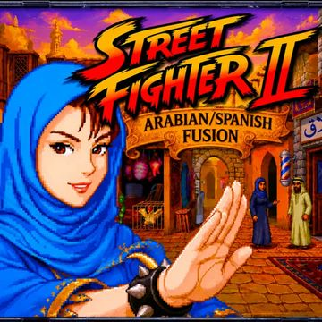
Street Arabian Fighter II22 tracks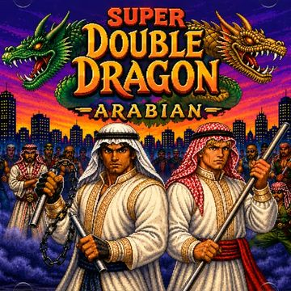
Super Double Dragon Arabian Remix8 tracks Sonic 1 + 2 Arabian Spanish Fusion27 tracks
Sonic 1 + 2 Arabian Spanish Fusion27 tracks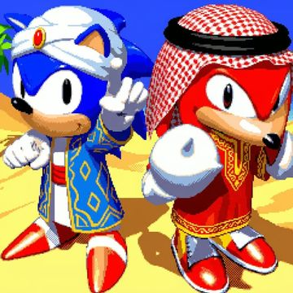
Sonic 3 & Knuckles - Arabian Spanish Fusion39 tracks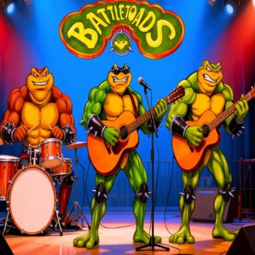
Battletoads in Battlemaniacs - MTV Unplugged Version11 tracks Donkey Kong Country 1,2 Arabian Spanish Fusion34 tracks
Donkey Kong Country 1,2 Arabian Spanish Fusion34 tracks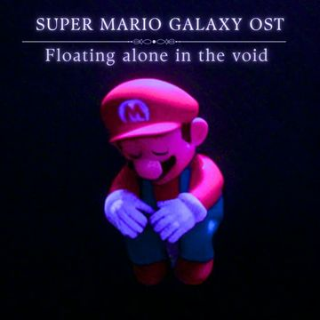
Mario Galaxy but You're Floating Alone in an Emotional Void17 tracks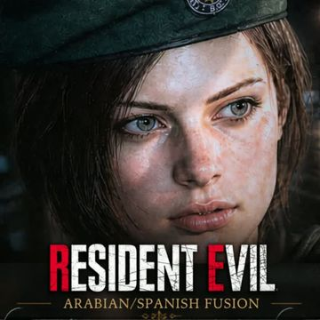
ResidentEvil Arabian14 tracksSilent Hill - Arabian Remix Collection10 tracks Yoshi's Island - Middle Eastern Remix15 tracks
Yoshi's Island - Middle Eastern Remix15 tracks